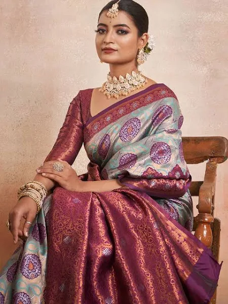

Kanchipuram sarees
Sarees are the epitome of beauty for women nationwide. However, the style, color, and design vary from region to region. The length of the sarees is up to 5 yards to 6 yards. Kanchipuram sarees are a well-known specialty of Tamil Nadu. They are traditional handwoven sarees made with specialized threads and motifs. The excellent craftsmanship is illustrated in this stunning saree design and patterns. Kanchipuram sarees are costly and usually worn at weddings, festivals, and grand ceremonies. A notable draping saree known as the Madisar saree signifies married women. These sarees are worn during auspicious occasions.